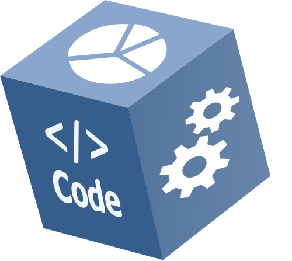
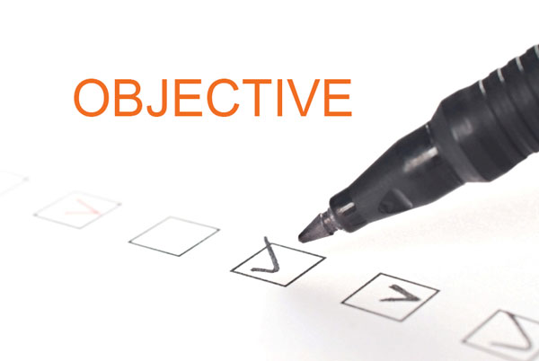
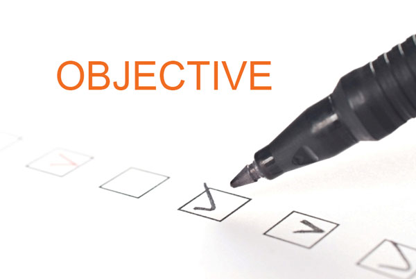
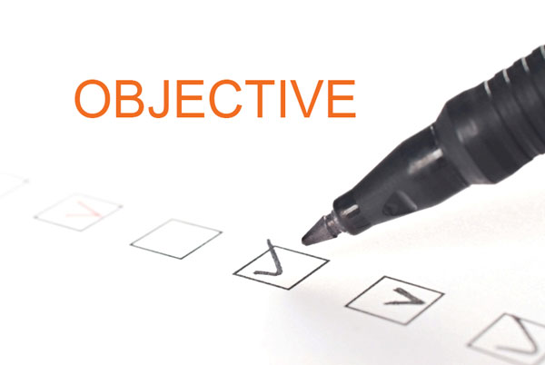

Elk van de foto's heeft een eigen animatie

 

Mijn kijk op de toekomst is nog niet helemaal zeker, ik ben er nog niet volledig uit. Ik heb een groote interesse in applicatie ontwikkeling, maar webdevelopment is dan ook iets waar ik graag mee bezig ben. Wat ik met zekerheid wil, zijn doorgroeimogelijkheden binnen de IT-wereld.
Ik probeer me zo goed mogelijk op de hoogte te houden van de nieuwste snufjes en updates binnen de IT-wereld.
Als een bedrijf me een bijscholing voorstelt om mijn kennis verder te kunnen uitbreiden zal ik hier zeker geen neen tegen zeggen, alle ervaring is welkom.
Ik ben zeer gedreven om een zo goed mogelijk resultaat te behalen bij elk "objective" dat mij voorgelegd wordt. IT is al een soort hobby voor mij en zoals ze zeggen is het altijd leuk om van je hobby je job te kunnen maken.
Elk van de foto's heeft een eigen animatie
